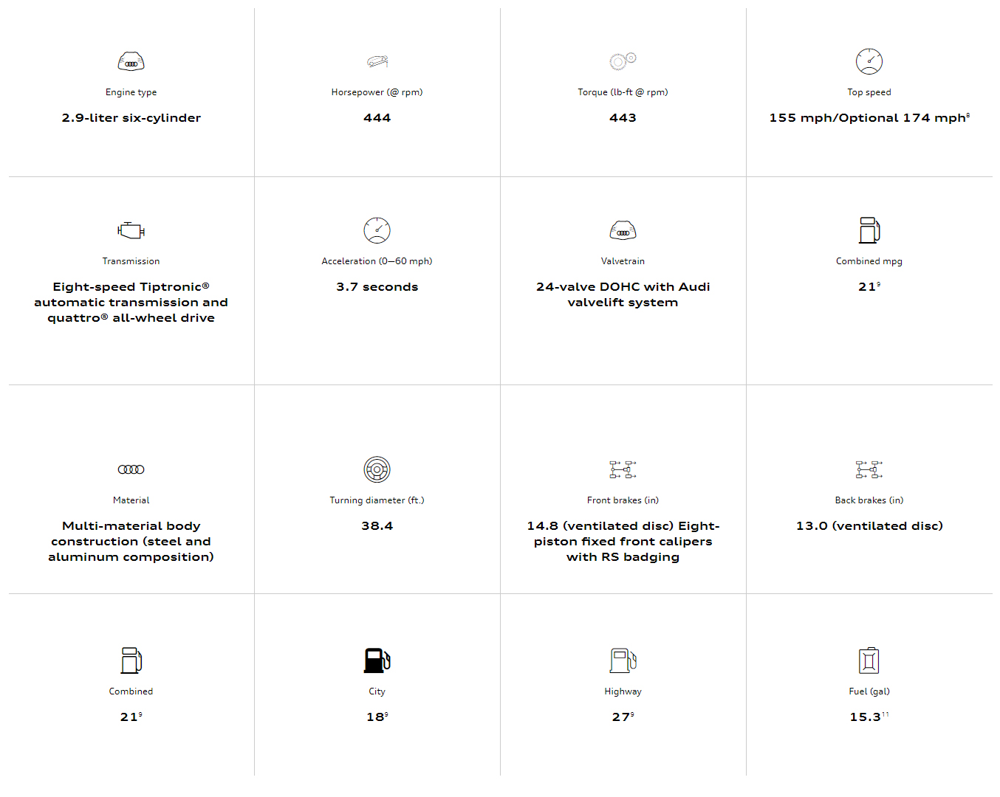
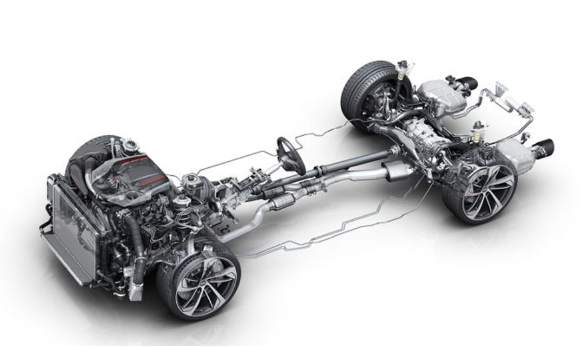
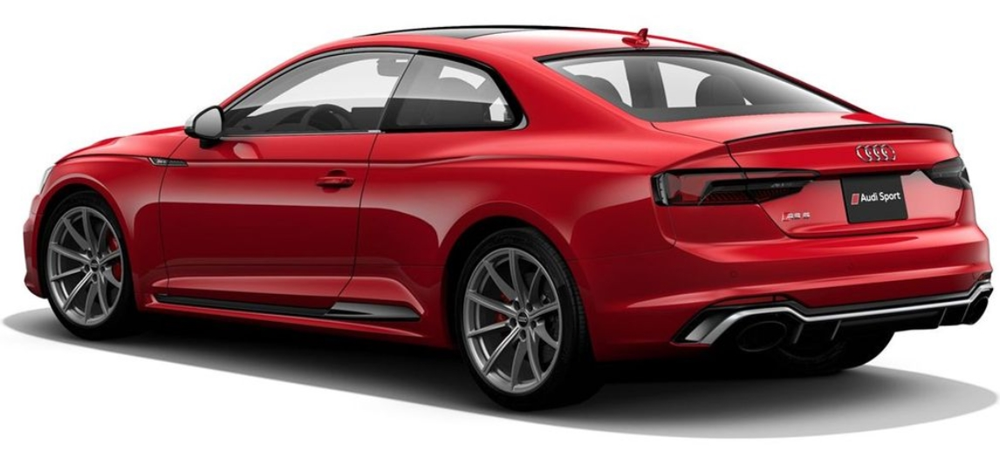

Specs overview:


Quattro® sport rear differential
The Audi RS 5 Coupe features quattro® all-wheel drive technology. The system has an asymmetric variable torque split that can intuitively send power to where it’s needed, helping enhance performance and traction as road conditions demand. Standard quattro® sport rear differential can help enhance handling performance even further with its torque-vectoring capabilities.

Dynamic package
Red brake calipers, an RS sport exhaust system with black tips and RS sport suspension with Dynamic Ride Control make the available Dynamic package an attractive way to tailor the RS 5 Coupe to your liking.
Audi Center: